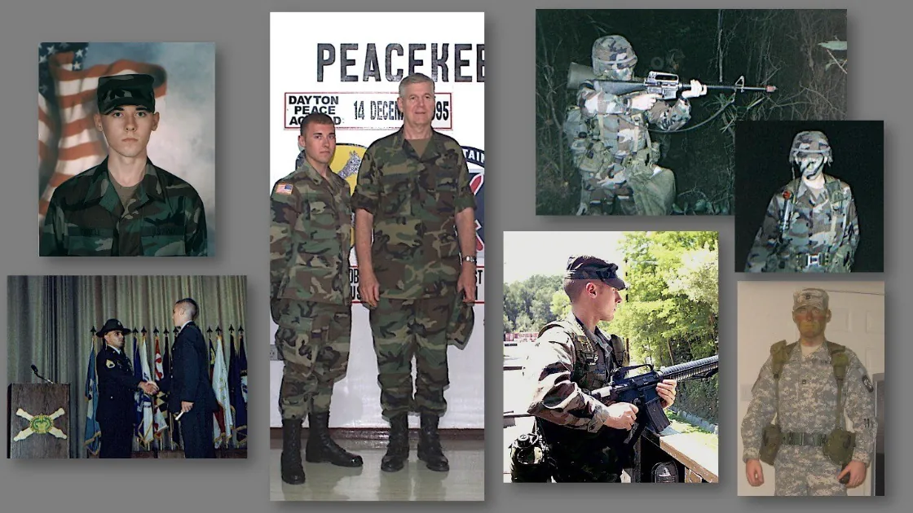
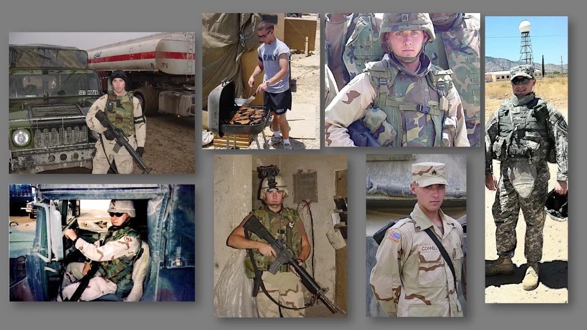
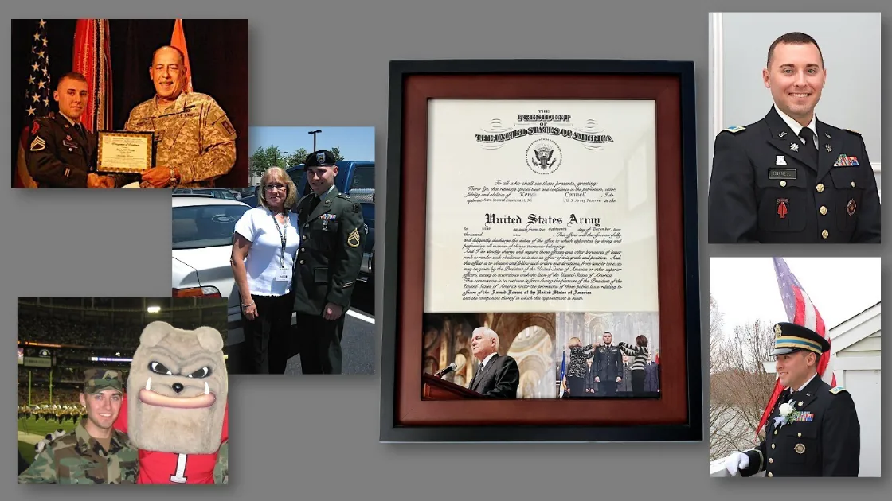
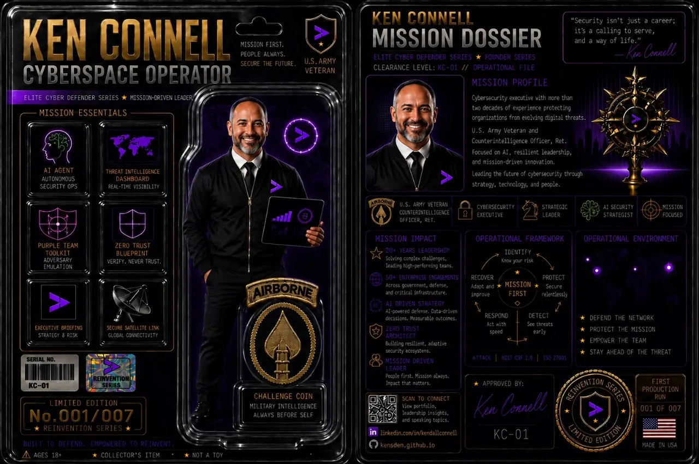
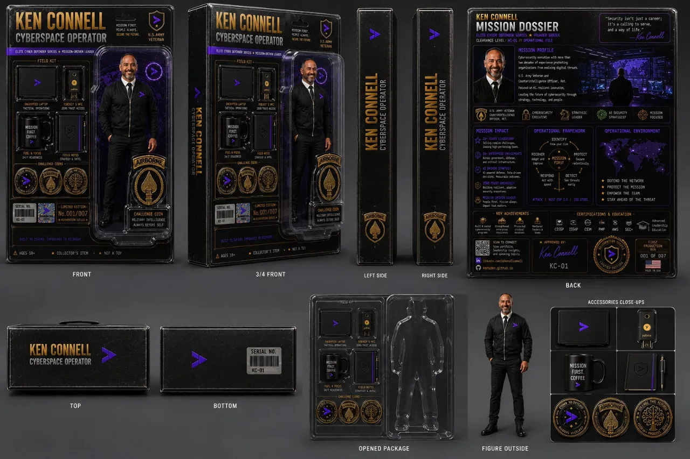

Agentic SecOps Tradecraft Playbook
field reference · offline appRed, blue and purple teaming in the age of agentic AI: sourced actions, a resource library and a briefing deck, in one offline HTML file with no network calls.
root@KensDen:~# whoami
Securing agentic AI and Zero Trust · Army Major (Ret.) · maker and dad
I build and break things to understand them. Lately that means agentic AI security: red, blue, and purple teaming the systems we're all about to depend on. Tech for good, made in the South, built in Northern Virginia. 💚🌎
ls ~/projects/
Free, public, sourced. Built on my own time.
Red, blue and purple teaming in the age of agentic AI: sourced actions, a resource library and a briefing deck, in one offline HTML file with no network calls.
Eight weeks from practitioner to lead: a shared Zero Trust core, then Department of War (DoW), federal civilian and private-sector tracks. Public sources only.
Federal cyber frameworks are thick woods. Lensatic is the compass: what each one is for, who it binds, and where zero trust and AI land. No account, nothing collected.
A turn-based space and drone cyber strategy sim: survive a six-turn adversary campaign mapped to SPARTA, ATT&CK and ATLAS. Free, in your browser, no telemetry.
An unofficial study plan for CCAO-F plus a practice drill for the Associate and Architect exams, built for phone review.
Project art is AI-generated, human-commanded.
ls ~/writing/
Occasional long-form writing. Stories first, tech second.
ls ~/now/
cat ~/.ethos
Be Knowledgeable. Go deep, read the primary source, earn the understanding.
Be Relevant. Aim it at problems that matter, right now, in the real world.
Be Engaged. Show up. Collaborate, ship, teach, and keep moving.
head -n 2 story.txt
I built my first PC from a pile of parts in 8th grade in South Georgia, and taught myself the rest from library VHS tapes and a DOS prompt. Two decades of Army service later, I retired as a Major in Military Intelligence in 2024.
In between: fifteen-plus years of cybersecurity consulting, from London to the federal world. These days it's securing agentic AI. Off the clock I'm a maker and a dad, raising builders, not browsers.
I've been tinkering with tech since 8th grade, when I built my first PC from a pile of parts. I taught myself from an old Microsoft VHS series on a VCR borrowed from the local library.
Before I could afford the real thing, I'd clack away on an old typewriter, pretending it was a computer, typing up the "www-dot" addresses I scribbled down from the ends of TV commercials, building a hand-written index of an internet I couldn't reach yet. The real thing came piece-by-piece, with money earned mowing yards and dodging fire ants during long, hot South Georgia summers.
It only booted to a DOS prompt until I could afford Windows 3.1. Dial-up arrived not long after. Back then "the network" was sneakernet (a stack of floppies hand-carried across the room), and my printer was a clunky black-and-white dot-matrix machine chewing through perforated tractor-feed paper. All before USB drives were even a thing.


I later enlisted in the U.S. Army Reserve in 2000, my junior year of high school, and shipped off the summer before my senior year to Basic Combat Training at Fort Sill, Oklahoma (Home of the Field Artillery). The next year brought Advanced Individual Training at Fort Jackson, South Carolina, where I took my final exam on the morning of September 11th, 2001: the same date printed on my AIT certificate, and the day I officially completed initial entry training and was qualified to serve as a soldier.
From there I came up through the enlisted ranks to Staff Sergeant, earned my commission as an officer, and retired as a Major in 2024: more than two decades of service; #TempusFugit. Along the way I deployed to Bosnia-Herzegovina for peacekeeping and across the Middle East, including Iraq.



Out of the University of Georgia in 2009, my first job took me across the Atlantic: a security consultant at Deloitte in London, advising commercial clients throughout Europe on global trade compliance.
Since London, I've spent fifteen-plus years in management consulting and risk advisory, leading enterprise cybersecurity work for Fortune 100 and global clients across the commercial and federal worlds, from cyber threat intelligence and cloud security to compliance across international frameworks.
These days I work in security, pairing an analyst's mindset with an operator's instinct. Attribution, insider risk, adversarial tradecraft: the old questions, asked of new Agentic AI systems. For me, security isn't just a department. It's a mission.
Off the clock, I'm a maker, a tinkerer, and a dad doing his best to pass the curiosity on, building little electronics projects with my kiddos and watching the same sparks of curiosity ignite in them. AI is becoming part of their everyday world the way the internet became part of mine, so we're learning it together: prompts and patterns one day, soldering irons the next. I'd rather raise builders than browsers; kids who create, build, and delegate, not just swipe and scroll. Trust, but verify, it turns out, is both a parenting principle and a security one. I wrote the longer version of that thought in Batman Has No Superpowers. That's the Whole Point. (it's under Dispatches, above).


man ken
What happens when a comic collector spends two decades in security? Eventually you make yourself the action figure. Mission first. People always. Not a toy.
Now I've finally made it into the toy aisle. Sort of. One evening spent directing an AI image model, and here I am in blister packaging. Not magic. Just a tool, built on human effort.
And yes, the early versions misspelled several words. "Counterintelligence" among them. Took a human to catch the mistakes. Moral of the story… Even the machine needs a human in the lead!


neofetch
ken@hello-future
ls ~/inspiration/
The maker's creed, quotes I keep, the people who shaped how I think, and three talks worth your time.
cat /etc/creed
The world is our classroom, our laboratory. We're the makers and the modders, the dreamers and the hackers: the "what if?" and the "I wonder why?" Every problem is just a chance to improve our lives, our world, our community. So we build, we break, we fix, we learn, and together, we make the future.
fortune
"Progress brings with it the amelioration of the human condition."
my motto, and the reason any of this is worth doing
"Always work hard on something uncomfortably exciting."
Larry Page, co-founder of Google & Alphabet
cat ~/influences.log
ls ~/talks/
The spirit behind everything on this page: the world as classroom and laboratory, and the makers who build it.
How a transformative technology (like electricity a century ago) eventually fades into invisible infrastructure, unleashing inventions nobody saw coming. It's how I think about AI now: we're still in the early, electrifying days. The world-changing inventions come after the technology fades into the background.
This one hits close to home: why passion and purpose tend to beat pedigree. "Choose the underestimated contender, whose secret weapons are passion and purpose." Reminds me where I came from.